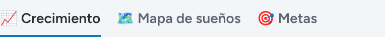
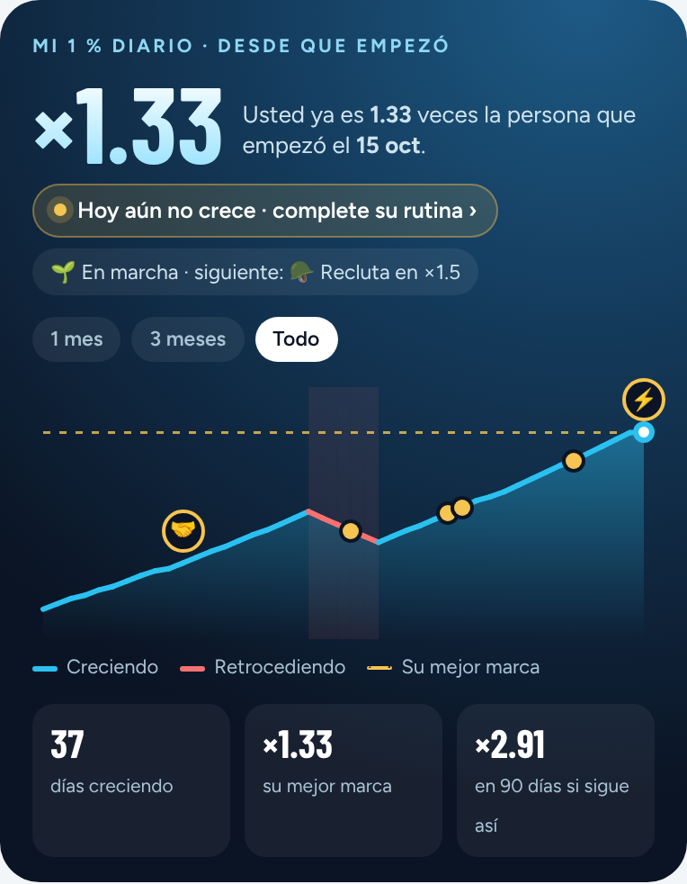
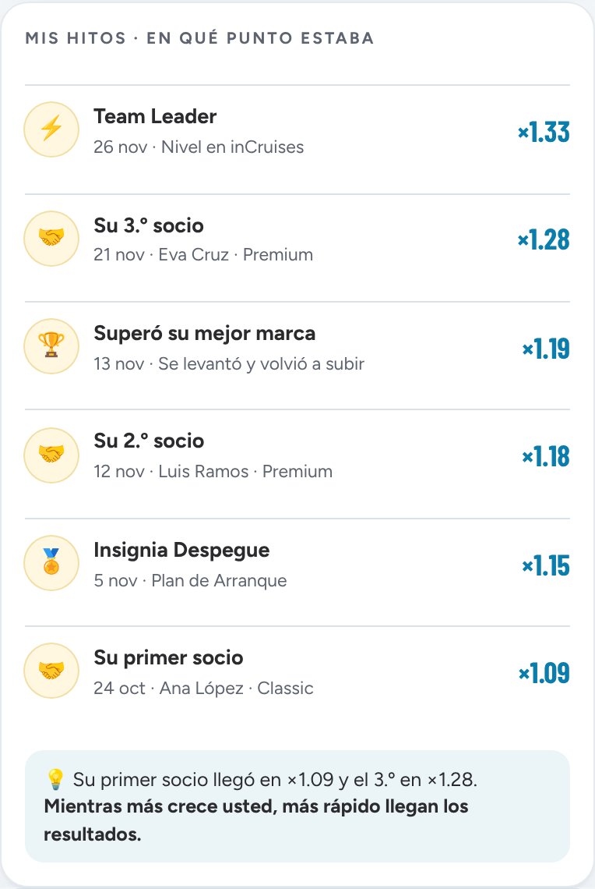

Guía de la app · Nueva sección
CRECER UN 1 %
CADA DÍA
Conozca «Mi crecimiento»: la pantalla donde usted ve, con números y una gráfica, cuánto ha crecido como persona y como líder desde que empezó.
“Su negocio va a crecer según lo que crezca usted. Todos los días, un 1 % más.”
— Edwin García Go
Si completa su rutina todos los días.
Action Leaders · #HASTAQUEFUNCIONE1
1 · Dónde está
BOTÓN «CRECER» EN LA BARRA DE ABAJO
El botón que antes decía «Sueños» ahora se llama ✨ Crecer. Adentro hay 3 pestañas:

📈
CrecimientoSu número de crecimiento, la gráfica, sus pilares, su calendario, sus hitos y sus caídas y regresos.
🗺️
Mapa de sueñosEl mismo mural de siempre: «Mi por qué», «Mi próximo crucero» y sus sueños con foto.
🎯
MetasSu próximo rango, su ingreso soñado y su compromiso del mes con su avance.
🔒 Es privado. Solo usted lo ve. Ni su patrocinador ni su línea ven su crecimiento. Usted decide si lo comparte.
¿No lo ve? Cierre la app por completo y vuelva a abrirla.
Mi crecimiento · Guía2
2 · Cómo se calcula
SU RUTINA LE HACE CRECER
Cada día, su rutina diaria suma a su crecimiento:
| ✅ Rutina completa (los 5 puntos + su declaración de éxito) | +1 % |
| Cada punto de la rutina (por ejemplo, 3 de 5) | +0.2 % c/u |
| 5 de 5 pero sin la declaración | +0.8 % |
| ❌ Un día sin nada de rutina | −1 % |
El crecimiento se acumula para siempre, desde el primer día que hizo su rutina. Nunca vuelve a cero: si un día cae, al día siguiente se levanta y sigue subiendo.
💡 1 % mejor cada día durante un año = 37 veces mejor. 1 % peor cada día = casi nada. La diferencia la hace lo que usted hace hoy.
Sus niveles de crecimiento
🌱En marcha
×1
🪖Recluta
×1.5
⚔️Guerrero
×2
🏆Campeón
×5
👑Leyenda
×10
Cuando sube de nivel, la app se lo celebra con confeti.
Mi crecimiento · Guía3
3 · Cómo leer su pantalla
SU NÚMERO Y SU GRÁFICA

1
Su número«×1.33» = usted ya es 1.33 veces la persona que empezó.
2
HoyCuánto creció hoy. Si dice «Hoy aún no crece», tóquelo y lo lleva a su rutina.
3
Su nivelEn qué nivel va y cuánto le falta para el siguiente.
4
La gráficaCeleste = creciendo. Roja con sombra = días sin rutina. Línea dorada = su mejor marca. Elija «1 mes», «3 meses» o «Todo».
5
Las medallasSon sus hitos (socios nuevos, Team Leader, rangos, rachas…) en el punto exacto donde pasaron. Tóquelas.
6
AbajoDías creciendo, su mejor marca y a dónde llega en 90 días si sigue así.
Mi crecimiento · Guía4
4 · Sus 4 pilares y su calendario
EN QUÉ CRECE USTED
🧠 Mente: declaración de éxito y auto desarrollo (audios, lecturas, videos).
⚡ Acción: contactos nuevos, presentaciones y seguimientos.
🔥 Constancia: días con la rutina completa.
🌱 Hábitos: sus hábitos personales de «Mis hábitos» en Inicio.
Se miden del 0 al 100 en el mes. El que esté más bajo es el que más le conviene trabajar.
Cada día del mes: entre más oscuro el cuadro, más creció ese día. Los cuadros rosados son días sin rutina.
Toque un día para ver sus puntos y en qué número iba.
Con ‹ › ve los meses anteriores.
Mi crecimiento · Guía5
5 · Su avance de un mes a otro
ESTE MES VS. EL PASADO
Compara su mes actual (hasta hoy) con el mes pasado completo: presentaciones, seguimientos, contactos nuevos, mejor racha, días de auto desarrollo y hábitos.
▲ verde = mejoró. ▼ rojo = bajó.
Se ve desde que cierra su primer mes completo.
6 · Caídas y regresos
Todos caemos alguna vez. Lo que cuenta es levantarse.
Aquí ve su caída más grande, cuántas veces se levantó y cuántos días tardó en volver a su mejor marca.
📉 Días sin rutina · 💪 Se levantó · 🏆 Superó su mejor marca.
Mi crecimiento · Guía6
7 · Mis hitos
EN QUÉ PUNTO ESTABA CUANDO LO LOGRÓ

Cada logro queda marcado con el número de crecimiento que usted tenía ese día:
- 🤝 Cada socio nuevo
- ⚡ Team Leader y 🏅 cada rango
- 🛡️ Líder y ⚔️ Líder Espartano del Sistema de liderazgo
- 🏅 Insignias del Plan de Arranque y graduación Espartano
- 🎓 Networker Pro terminado
- 🔥 Rachas de 7, 14, 21 y 30 días
- Nuevos niveles de crecimiento
💡 Al compararlos lo va a notar: mientras más crece usted, más rápido llegan los resultados.
Mi crecimiento · Guía7
8 · Avisos y compartir
LA APP LE ACOMPAÑA
Avisos en la app (una vez cada uno):
- 🪖 ¡Nuevo nivel!
- 🏆 Superó su mejor marca
- 💪 ¡Se levantó!
- 📈 Su semana (los lunes)
Aviso al teléfono: cada domingo a las 8:00 p.m. le llega cuánto creció en la semana.
Compartir: con 📣 Compartir mi crecimiento sale un flyer para sus estados. En diciembre, 📅 Mi año.
Usted decide si lo comparte. Si no, solo lo ve usted.
Su tarea de hoy
1
Abra «Crecer» y vea su número.Toque «Así se calcula su 1 %».
2
Complete su rutina de hoyy vea cómo el número sube +1 %.
3
Mire su pilar más bajoy trabájelo esta semana.
Todos los días, un 1 % más #HASTAQUEFUNCIONE
Action Leaders8